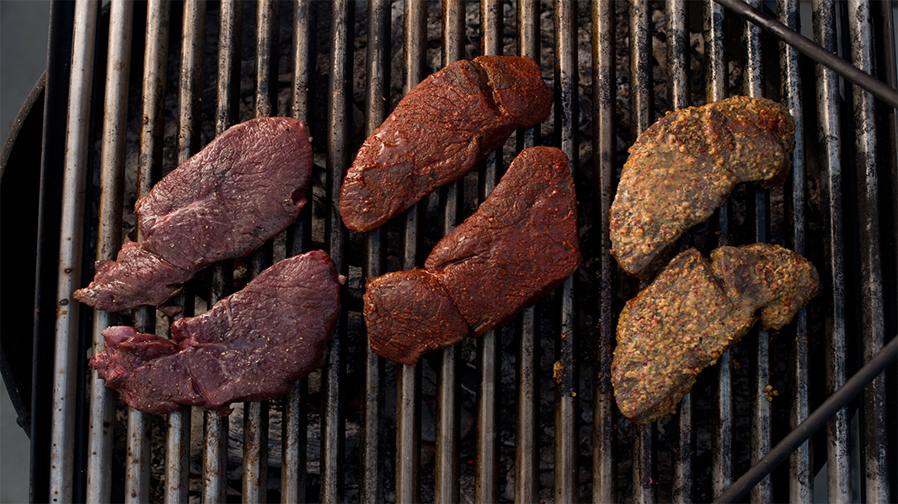

Venison Barbecue

Descritpion
Venison steaks, barbecued in italian dressing.
Ingredients
- 1 (16 ounce) bottle Italian-style salad dressing
- 4 (1/2 pound) venison steaks
Steps
- Marinate the venison meat over night in the Italian dressing. Flip over at least one time during the marinade.
- Cook meat on the grill over medium-high heat. Cook for 20 to 30 minutes or until done to your taste.
Return to main page